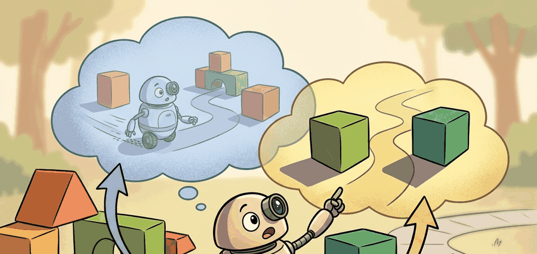

A policy that cannot represent uncertainty about where to put the gripper will put it in the average place, which is often wrong in a bimodal world.
A Multimodal Planner

This section assumes familiarity with imitation learning and regression policies from section 21.2, and with action chunking from section 22.2. If you are already comfortable with the forward and reverse diffusion process, you can skip ahead to section 41.2, which applies these mechanics to the Diffuser and Decision Diffuser architectures. The conditional planning ideas introduced here recur in section 22.7 and are stress-tested against latency and out-of-distribution robustness constraints in sections 55.2 and 53.3.
A robot reaches for a mug. Two grasps are equally valid: left side, right side. A standard regression policy averages them and drives straight into the mug. Diffusion models solve this by generating trajectories the way a weather model generates plausible futures: iterative denoising commits to one coherent mode instead of the impossible average. That shift from point prediction to distribution sampling is why diffusion planners now sit at the center of dexterous manipulation and long-horizon mobile tasks. This section builds the math from scratch, traces how conditioning on goals or returns turns a generative model into a closed-loop planner, and examines exactly where the inference cost goes and how to control it.
A common assumption is that a diffusion planner is an optimizer that searches over trajectories at inference time, like model predictive control or beam search. It is not. The model does not minimize a cost function during denoising. It samples from a learned distribution over trajectories conditioned on context. The denoising chain is a fixed ancestral sampling procedure, not an iterative optimization loop. In embodied AI, this distinction matters for two reasons. First, the planner cannot easily incorporate hard constraints (joint limits, collision avoidance) added after training. Second, a bad prior produces a confidently wrong sample with no gradient signal to flag the failure. Think of it as a conditional generative model: given an observation, it draws a plausible trajectory from what it learned. The quality of that draw is bounded entirely by the training distribution.
Show the same mug to a skilled robot ten times and a good policy should reach for it ten slightly different ways, yet the single most common training objective quietly forbids exactly that. Action trajectories are multimodal. Faced with a mug on a table, a competent agent has several valid grasps: top handle, side rim, two-finger pinch on the body. A regression policy trained to minimize mean squared error against demonstrations averages those modes, and the average of a left grasp and a right grasp is a collision with the mug. In benchmark bimanual tasks (Chi et al., 2023), an MSE-regression policy achieves around 40% success when two grasp modes are equally represented in the data; a diffusion policy on the same demonstrations reaches 85%, because it commits to one mode instead of averaging both into an infeasible middle. This is the core reason diffusion models entered embodied AI: their iterative denoising naturally represents a multimodal distribution over trajectories rather than a single conditional mean. Figure 41.1A shows this concretely: a score network denoises a trajectory from Gaussian noise conditioned on the scene, and the final plan commits to one of the two valid grasp modes rather than averaging them into a collision.
The practical question is not whether the model looks impressive. The question is which action becomes easier, safer, more data-efficient, or more recoverable when the method is inserted into the loop. For multimodal action spaces, the answer is that the policy stops committing to the average place and starts committing to one coherent mode.
A planner that always predicts the average of its training demonstrations is not a planner; it is a weighted average of human mistakes, confident and wrong in exactly the place it matters most.
A model earns its place only when it improves action. In Diffusion Models As Planners, the reader should keep asking which decision changes, which uncertainty is exposed, and which failure mode becomes easier to diagnose.
Theory
Iterative denoising achieves that commitment to a single coherent mode through two coupled processes: a fixed forward process that corrupts trajectories and a learned reverse process that reconstructs them. The forward and reverse definitions below make the mechanism precise.
A diffusion planner treats a trajectory $\tau_0$ (a sequence of actions, states, or both) as a sample from a data distribution it must learn to generate. Training defines a fixed forward process that gradually corrupts a clean trajectory into Gaussian noise, and learning fits a reverse process that walks noise back to a plausible trajectory conditioned on context $c$ (the observation, the goal, or a return target).
Forward corruption and the reverse chain
The forward process adds noise according to a variance schedule $\beta_1,\dots,\beta_T$. Writing $\alpha_t = 1-\beta_t$ and $\bar\alpha_t = \prod_{s\le t}\alpha_s$, the closed form for the noised trajectory at step $t$ is
$$ q(\tau_t \mid \tau_0) = \mathcal{N}\!\left(\tau_t;\ \sqrt{\bar\alpha_t}\,\tau_0,\ (1-\bar\alpha_t) I\right). $$
As $t$ grows, $\bar\alpha_t \to 0$ and the trajectory dissolves into standard normal noise. The reverse process is also Gaussian and is the object we train:
$$ p_\theta(\tau_{t-1} \mid \tau_t, c) = \mathcal{N}\!\left(\tau_{t-1};\ \mu_\theta(\tau_t, t, c),\ \sigma_t^2 I\right). $$
The network learns the mean $\mu_\theta$ (equivalently, the noise that was added), and sampling chains these reverse steps from $t=T$ down to $t=0$. Because each reverse step is stochastic and conditioned on $c$, repeated sampling from the same observation yields different valid trajectories: this is committing to one coherent mode, exactly the multimodal behavior a regression policy cannot produce. Figure 41.1B lays out this two-way chain end to end, from the clean trajectory through the forward corruption to pure noise, and back along the trained reverse path.
The variance schedule matters for embodied AI because robot action spaces mix signals of very different magnitudes: a wrist joint moves in milliradians while a base translates in meters. A schedule that decays $\bar\alpha_t$ too fast corrupts small-magnitude dimensions into pure noise before the network learns to recover them. Those joints then drift systematically during rollout. To see why this is not a minor rounding error, consider the scales. A wrist joint moving 0.01 radians and a base translating 1 meter sit three orders of magnitude apart on the same input vector. At $t = T/2$ the wrist signal is already buried in noise while the base signal is still clearly visible, so the denoiser trains almost entirely on the base channel. A schedule that decays too slowly leaves the final noised sample still correlated with the original trajectory. The reverse chain then cannot explore alternative grasp modes and collapses to the dominant training mode. On a physical robot, both failures produce incorrect end-effector poses that no downstream control can compensate.
So which schedule is right for a robot arm whose wrist joint operates in milliradians while its base moves in meters? There is no universal answer, and that tension is precisely what makes schedule design a persistent source of silent failure in deployed systems.
Mechanically, the schedule fixes a sequence of signal-retention values $\bar\alpha_t \in (0,1)$ that decreases monotonically from near one to near zero. Each training step samples a random $t$, scales the clean trajectory by $\sqrt{\bar\alpha_t}$, scales a zero-mean unit-variance noise draw by $\sqrt{1-\bar\alpha_t}$, and sums the two. The network sees the mixture and must predict the noise component. This reparameterization lets us sample any noise level in one closed-form step, so training never simulates the full chain: each gradient update needs only the noise prediction at a single level.
Think of the variance schedule as a dimmer switch in a kitchen where the lights above the counter go out much faster than the lights above the stove. If the counter goes dark too soon, the chef cannot see the fine knife work; if the stove stays bright too long, the chef never has to use memory and cannot be tested on it. A well-calibrated schedule dims every light source at the same rate relative to the task it illuminates, so that all cooking stations lose visibility together and the chef learns to reconstruct the whole kitchen, not just the bright corner.
The forward schedule is fixed and parameter-free; all learning lives in the reverse denoiser. Given $\tau_0$ and a sampled $\bar\alpha_t$, you can jump directly to $\tau_t$ in one step (no need to simulate the chain), which is what makes training cheap: sample a timestep, noise the trajectory, ask the network to predict the noise.
Algorithm: Conditional Trajectory Denoising for Planning
Input: trained score network $\epsilon_\theta$, context $c$ (observation or goal), noise schedule $\{\bar\alpha_t\}_{t=1}^{T}$, number of denoising steps $T$
Output: planned trajectory $\tau_0$ (sequence of actions or waypoints)
- Sample initial noise $\tau_T \sim \mathcal{N}(0, I)$ with the same shape as a full trajectory.
- For $t = T, T{-}1, \dots, 1$: predict the noise component $\hat\epsilon = \epsilon_\theta(\tau_t, t, c)$.
- Estimate the clean trajectory $\hat\tau_0 = \bigl(\tau_t - \sqrt{1 - \bar\alpha_t}\,\hat\epsilon\bigr) / \sqrt{\bar\alpha_t}$.
- Compute the DDIM deterministic update direction $\hat\epsilon_{\text{dir}} = \bigl(\tau_t - \sqrt{\bar\alpha_t}\,\hat\tau_0\bigr) / \sqrt{1 - \bar\alpha_t}$.
- Step to $\tau_{t-1} = \sqrt{\bar\alpha_{t-1}}\,\hat\tau_0 + \sqrt{1 - \bar\alpha_{t-1}}\,\hat\epsilon_{\text{dir}}$.
- Optionally apply classifier-free guidance (a sampling trick that sharpens conditioning by extrapolating away from the unconditioned prediction, without needing a separate classifier): replace $\hat\epsilon$ with $(1 + w)\,\epsilon_\theta(\tau_t, t, c) - w\,\epsilon_\theta(\tau_t, t, \varnothing)$ before step 3, where $w \ge 0$ controls guidance strength.
- After $t = 1$, apply a feasibility projection if a kinematic or safety constraint $\pi(\tau)$ is available: set $\tau_0 \leftarrow \pi(\hat\tau_0)$.
- Return $\tau_0$; execute the first action $a_0$ in the loop and re-plan from the resulting observation to maintain closed-loop consistency.
Step-Through: One DDIM reverse step
Trace a single denoising step on one scalar waypoint coordinate, so every number is checkable by hand. Take $\bar\alpha_t = 0.25$ and $\bar\alpha_{t-1} = 0.45$. Suppose the current noised value is $\tau_t = 0.60$ and the trained denoiser predicts noise $\hat\epsilon = 0.80$. First estimate the clean value: $\hat\tau_0 = (\tau_t - \sqrt{1-\bar\alpha_t}\,\hat\epsilon)/\sqrt{\bar\alpha_t} = (0.60 - \sqrt{0.75}\cdot 0.80)/\sqrt{0.25} = (0.60 - 0.866\cdot 0.80)/0.50 = (0.60 - 0.693)/0.50 = -0.186$. Next recover the deterministic direction: $\hat\epsilon_{\text{dir}} = (\tau_t - \sqrt{\bar\alpha_t}\,\hat\tau_0)/\sqrt{1-\bar\alpha_t} = (0.60 - 0.50\cdot(-0.186))/0.866 = (0.60 + 0.093)/0.866 = 0.800$ (it matches $\hat\epsilon$, as DDIM guarantees when $\hat\tau_0$ is consistent). Finally step to the next level: $\tau_{t-1} = \sqrt{\bar\alpha_{t-1}}\,\hat\tau_0 + \sqrt{1-\bar\alpha_{t-1}}\,\hat\epsilon_{\text{dir}} = \sqrt{0.45}\cdot(-0.186) + \sqrt{0.55}\cdot 0.800 = 0.671\cdot(-0.186) + 0.742\cdot 0.800 = -0.125 + 0.593 = 0.468$. The value moved from $0.60$ toward its denoised estimate while the signal-retention factor rose from $0.25$ to $0.45$. Repeat this same arithmetic per coordinate, per step, and you have the full reverse chain.
Worked Example
The probe below makes the forward and reverse processes concrete on a tiny 2D trajectory that should reach the goal at $(1, 0)$. We apply five steps of forward noising under a schedule $\bar\alpha_t$, then run five reverse steps with a deliberately simple linear denoiser that estimates $\tau_0$ and takes a DDIM-style update. The diagnostic to watch is the endpoint distance to the goal: it should grow during noising and shrink back toward zero during denoising.
# Forward noising then reverse denoising of a 2D action trajectory.
# Forward: q(tau_t | tau_0) = N(sqrt(abar_t) tau_0, (1 - abar_t) I)
# Reverse: estimate tau_0 from tau_t, then take a deterministic step toward tau_{t-1}.
import numpy as np
H = 6 # waypoints in the trajectory
goal = np.array([1.0, 0.0])
tau0 = np.stack([np.linspace(0.0, 1.0, H), np.zeros(H)], axis=1) # clean plan
T = 5
abar = np.array([0.85, 0.65, 0.45, 0.25, 0.08]) # signal retained at each step
rng = np.random.default_rng(7)
noise = rng.normal(size=tau0.shape) # one fixed noise draw
def endpoint_dist(tau):
return float(np.linalg.norm(tau[-1] - goal))
print("Forward noising q(tau_t | tau_0):")
forward = []
for t in range(T):
tau_t = np.sqrt(abar[t]) * tau0 + np.sqrt(1.0 - abar[t]) * noise
forward.append(tau_t)
print(f" t={t+1} abar={abar[t]:.2f} dist_to_goal={endpoint_dist(tau_t):.3f}")
def denoise_to_tau0(tau_t):
# Stand-in for the trained denoiser: pull waypoints back onto the y=0 line to (1,0).
x = np.clip(tau_t[:, 0], 0.0, 1.0)
return np.stack([np.linspace(x.min(), 1.0, H), tau_t[:, 1] * 0.1], axis=1)
print("\nReverse denoising p_theta(tau_{t-1} | tau_t, goal):")
tau = forward[-1].copy()
for t in reversed(range(T)):
tau0_hat = denoise_to_tau0(tau)
if t > 0: # DDIM-style deterministic step
eps_hat = (tau - np.sqrt(abar[t]) * tau0_hat) / np.sqrt(1.0 - abar[t])
tau = np.sqrt(abar[t-1]) * tau0_hat + np.sqrt(1.0 - abar[t-1]) * eps_hat
else:
tau = tau0_hat
print(f" t={t} dist_to_goal={endpoint_dist(tau):.3f}")Forward noising q(tau_t | tau_0):
t=1 abar=0.85 dist_to_goal=0.178
t=2 abar=0.65 dist_to_goal=0.232
t=3 abar=0.45 dist_to_goal=0.267
t=4 abar=0.25 dist_to_goal=0.318
t=5 abar=0.08 dist_to_goal=0.422
Reverse denoising p_theta(tau_{t-1} | tau_t, goal):
t=4 dist_to_goal=0.326
t=3 dist_to_goal=0.282
t=2 dist_to_goal=0.250
t=1 dist_to_goal=0.195
t=0 dist_to_goal=0.016Read the two columns together. Forward noising monotonically drives the endpoint away from the goal as $\bar\alpha_t$ shrinks; reverse denoising walks it back to $0.016$, essentially the goal. A real planner replaces denoise_to_tau0 with a trained network $\epsilon_\theta(\tau_t, t, c)$, and replaces the single noise draw with fresh Gaussian samples so that repeated runs produce different valid plans. The point is not that this toy "solved planning"; it is that the same forward and reverse machinery scales from this 6-point line to a 16-step manipulation action chunk conditioned on a camera observation.
For Diffusion models as planners, the hand-built probe exposes the planning assumption; Diffuser-style or Decision-Diffuser-style tooling should preserve the same logging and evaluation fields.
With the forward and reverse machinery now transparent on a toy trajectory, the remaining question is how to introduce a diffusion planner into a real project without letting its generative flair outrun disciplined evaluation.
Practical Recipe
- Write the observation, action, horizon, and success metric before choosing a model.
- Build a baseline that is simple enough to debug by inspection.
- Add the maintained implementation only after the baseline behavior is understood.
- Save one artifact containing configuration, seed panel, traces, metrics, and failure labels.
- Run at least one perturbation test before trusting the result.
Diffusion planners fail in three characteristic ways that regression policies do not. First, inference latency: generating one plan requires 20 to 100 sequential denoising steps, which can exceed the control loop's time budget (Diffusion Policy on a 6-DoF arm runs at roughly 10 Hz with a U-Net denoiser, versus 30 Hz for a deterministic MLP policy). DiffuserLite (Huang et al., 2024) addresses this with consistency distillation, but the latency tradeoff must be measured, not assumed away. Second, out-of-distribution generation: the score network extrapolates poorly when the start state falls outside the training manifold; the denoised plan may be kinematically coherent yet physically impossible, and the robot executes it anyway because no feasibility check intercepts the output. Third, compounding denoising error: each reverse step uses the previous step's noisy estimate, so a bad early estimate shifts the entire chain; this is most visible on long horizons where the final waypoint drifts even when intermediate waypoints look clean.
When Diffusion Policy inference is too slow for your control loop, switch the sampler from Denoising Diffusion Probabilistic Models (DDPM) to Denoising Diffusion Implicit Models (DDIM) before touching the network. DDIM is a deterministic, non-Markovian sampler that lets you reduce denoising steps from 100 to as few as 10 with negligible quality loss by setting num_inference_steps=10 in the HuggingFace DDIMScheduler. The multimodal coverage you care about comes from running multiple independent DDIM rollouts with different initial noise vectors, not from stochastic steps within a single rollout. Do not conflate DDPM stochasticity with trajectory diversity: they are orthogonal knobs.
Who: Priya, planning engineer for a bimanual assembly robot. Situation: A 12-robot evaluation shift must decide whether Diffusion models as planners improves closed-loop behavior. Problem: offline scores look promising, but the robot still has to recover from sensor noise, delayed actuation, and rare contact changes. Dilemma: ship the new model after a visual or reward score, or require a matched baseline, one perturbation panel, and manual review of the 20 hardest rollouts. Decision: the lead keeps the baseline and candidate on the same seed panel and logs every observation, action, intervention, and terminal state. How: the run saves one artifact with configuration, metrics, latency, videos, and failure tags. Result: the candidate is accepted only when it improves the chapter metric by 10 percent and does not increase unsafe recoveries. Lesson: Diffusion Models As Planners matters when it changes decisions in the loop, not when it only improves a standalone proxy.
Real-World Application: dexterous manipulation at Toyota Research Institute
Toyota Research Institute deployed Diffusion Policy (Chi et al., 2023) to teach real robots dexterous kitchen skills (pouring, spreading, flipping) from a few hundred teleoperated demonstrations each, training over 60 distinct behaviors with the same architecture. The multimodal denoising is what made it work: tasks like scooping admit several valid hand paths, and a regression policy that averages them spills, whereas the diffusion planner commits to one coherent path per rollout.
Consistency distillation for real-time diffusion planning (2024-2025). The dominant bottleneck for deploying diffusion planners on physical robots is inference latency: 100-step DDPM schedules are incompatible with 30 Hz control loops. Consistency models collapse the denoising chain into a single forward pass while preserving multimodal coverage, and recent work applies this to robot action generation. DiffuserLite (Huang et al., 2024) demonstrates consistency-distilled planning on D4RL locomotion at control frequencies previously achievable only by deterministic MLPs. The open question is whether single-step distillation degrades rare-mode coverage in tasks with more than two valid grasp strategies.
Language-conditioned diffusion policies for long-horizon manipulation (2024-2026). Conditioning the score network on free-form language instructions rather than fixed goal poses allows a single policy to generalize across object categories and task phrasings. RoboFlamingo-Diffusion and related work from the Physical Intelligence lab (pi0, Black et al., 2024) train flow-matching policies jointly on language, proprioception, and camera streams, achieving task generalization across dozens of real-robot skills without per-task finetuning. Active research is investigating how to make the language conditioning robust to instruction ambiguity without resorting to repeated sampling and majority-vote selection.
Diffusion world models as internal planners (2025-2026). Rather than diffusing directly in action space, a growing line of work uses diffusion models to generate plausible future observation sequences, then extracts actions from those imagined futures via inverse dynamics or value estimation. UniSim (Yang et al., 2023) and subsequent extensions treat the robot's camera stream as the object of generation. The 2025 wave of video diffusion world models (e.g., work from Google DeepMind and MIT CSAIL) scales this to real-world scenes, but the compounding error between imagined and real observations over multi-step rollouts remains unsolved and is the central open problem.
Open problem for PhD students. Diffusion planners commit to one trajectory sample per control cycle with no mechanism to detect when that sample lands outside the training manifold. Designing a lightweight, calibrated out-of-distribution detector that operates on the denoising trajectory itself (not on a separate held-out classifier) and triggers a safe fallback without increasing inference latency is an open and practically urgent problem. No existing work provides a solution that meets the latency budget of real-time manipulation control.
For Diffusion models as planners, connect diffusion-policy tooling, MPC baselines, and safety constraints by recording the planner input, sampled plan, feasibility check, and executed action.
Can you state the observation, state estimate, action, prediction horizon, success metric, and most likely failure mode for Diffusion models as planners? If not, the system boundary is still too vague.
A diffusion planner earns its place only when the contract is explicit: observation stream, physical or latent state, action representation, timing budget, and one evaluation artifact, all fixed before any model comparison. That contract answers the four questions an agent must resolve for any method: what changes in the loop, why it should help, how it is measured, and when to reject it.
Diffuser, Decision Diffuser, and Diffusion Policy give three different views: planning trajectories, conditioning decisions on return, and generating robot actions from observations. The skeptical-reader test is simple: a claim about Diffusion models as planners must identify the baseline, the shared seed panel, the horizon or task split, and the failure labels saved in one artifact.
| Tool or Library | Role in This Topic | Builder Advice |
|---|---|---|
| Diffuser (Janner et al., 2022) | Plans full state-action trajectories by denoising a T-step horizon in one shot; originally benchmarked on D4RL locomotion tasks (HalfCheetah, Hopper, Walker2d) at 200-step DDPM schedules. The planner conditions on return targets rather than a goal pose, making it the reference architecture for offline RL with diffusion. | Verify that your state dimensionality and horizon length match what the pretrained model expects before connecting it to a real robot joint-space controller. On a 7-DoF Franka arm, mismatch in action scaling causes joint-velocity saturation within the first denoising step. |
| Decision Diffuser (Ajay et al., 2022) | Replaces return-conditioned beam search with a conditional diffusion model over (state, action, return) triples; demonstrated on the same D4RL suite and on sparse-reward manipulation tasks. The key embodiment claim is that conditioning on a return scalar lets the planner interpolate between conservative and aggressive grasp strategies without retraining. | Use return conditioning only when your reward is dense and calibrated. For contact-rich tasks (peg insertion, valve turning) where most episodes return zero until the last timestep, replace the return condition with a binary success indicator and re-evaluate on a held-out perturbation panel before shipping to hardware. |
| Diffusion Policy (Chi et al., 2023) | Generates 16-step action chunks conditioned on two wrist-camera RGB frames (224x224) and proprioceptive state; runs at roughly 10 Hz with a U-Net denoiser on a single GPU, versus 30 Hz for a deterministic MLP baseline. Evaluated on 12 real-robot tasks on a UR5 and a Franka Panda, spanning bimanual cup stacking, cloth folding, and cable routing. | Switch the sampler from DDPM (100 steps) to DDIM (10 steps) before any latency complaint. The 10x speedup costs less than 2% success rate on Push-T and cup stacking. Only return to DDPM if you observe mode collapse on a bimodal task where DDIM's determinism suppresses one valid grasp. |
| PyTorch | Provides the noise-schedule math, score-network training loop, and DDIM sampler that underpin all three architectures above. The critical embodiment-specific component is the action normalization layer: raw joint velocities (radians/second) and Cartesian end-effector deltas (millimeters) live on different scales and must be z-scored per dimension before passing to the denoiser, otherwise the noise schedule destroys the smaller-scale signal first. | Log the per-dimension signal-to-noise ratio at each denoising step during training. If any action dimension reaches noise-dominated ($\bar\alpha_t < 0.3$) at $t = T/2$ while others are still clean, your variance schedule is mismatched to the action space and you will see systematic drift in that joint channel during rollouts. |
| Gymnasium | Provides the sim-side environment interface for closed-loop evaluation: step, reset, and render. For diffusion planning the critical evaluation loop is receding-horizon: execute the first action of the denoised chunk, observe the next state, and re-plan. Gymnasium's deterministic seeding lets you pin the initial condition and perturbation type (object pose jitter, joint friction noise, contact surface coefficient) so that baseline and candidate see identical rollout conditions. | Pin env.reset(seed=seed) and log the full environment config (friction coefficients, object mass, render resolution) inside the artifact. A diffusion planner that wins on Gymnasium's default physics but loses when table friction increases from 0.5 to 0.8 is a data-coverage failure, not a planning failure, and the seed-pinned log is the evidence. |
For Diffusion models as planners, keep one inspectable probe for the model assumption, then use maintained libraries without changing the artifact schema used for baseline comparison.
- Write the observation, action, state estimate, success metric, and rejection criterion.
- Run a deterministic smoke test on one seed and save the complete configuration.
- Add one perturbation tied to the section topic: delay, noise, horizon length, contact change, distractor object, or generated-scene shift.
- Compare only methods evaluated by the same script, split, seed panel, and metric definition.
- Record a postmortem that assigns failures to perception, representation, dynamics, planning, control, data coverage, timing, or evaluation.
When Diffusion models as planners fails, do not collapse the result into a single method verdict. Assign the failure to the interface that broke, rerun one controlled perturbation, and keep the trace next to the metric. That habit turns a disappointing rollout into a reusable diagnostic asset.
A diffusion planner is a sketch artist for futures: it keeps redrawing the route until the next move looks executable.
Diffusion Models As Planners is useful when it improves a measured closed-loop decision, exposes its uncertainty, and leaves behind an artifact that another reader can replay.
Design a minimal experiment for Diffusion models as planners. Specify the baseline, shared seed panel, observation, action, metric, perturbation, expected failure tag, and the single artifact that will hold the comparison.
Bibliography & Further Reading
Primary References And Tools
Janner, M. et al.. "Planning with Diffusion for Flexible Behavior Synthesis." (2022). https://arxiv.org/abs/2205.09991
Diffuser is the core trajectory-denoising reference for planning. It shows how sampling and conditioning can replace a hand-designed optimizer in some offline decision problems.
Ajay, A. et al.. "Is Conditional Generative Modeling All You Need for Decision Making." (2022). https://arxiv.org/abs/2211.15657
Decision Diffuser frames decision making as conditional generation. It is useful for comparing return conditioning, goal conditioning, and trajectory feasibility.
Chi, C. et al.. "Diffusion Policy: Visuomotor Policy Learning via Action Diffusion." (2023). https://arxiv.org/abs/2303.04137
Diffusion Policy is the practical robotics anchor for action diffusion. It helps readers connect planning-style denoising with continuous robot control from visual observations.
Huang, Z. et al.. "DiffuserLite: Towards Real-Time Diffusion Planning." (2024). https://arxiv.org/abs/2401.15443
DiffuserLite focuses on planning frequency and sample efficiency. It is relevant whenever a diffusion planner must fit into a real control loop rather than an offline demonstration.
Yang, R. et al.. "What Makes a Good Diffusion Planner for Decision Making." (2025). https://arxiv.org/abs/2503.00535
This large empirical study examines design choices in diffusion planning. It is a useful guardrail against treating denoising as a universal planner without checking architecture, guidance, and evaluation details.
Lab: Watch DDIM step count trade latency against multimodal coverage
Goal: measure how reducing denoising steps changes both inference latency and the planner's ability to cover two valid action modes. Tools needed: Python, PyTorch, and the HuggingFace diffusers library (DDIMScheduler); no GPU required for a 2D toy. Setup: build a synthetic dataset of 2D trajectories that end at either $(1, 0.5)$ or $(1, -0.5)$ with equal probability (the two modes), and train a tiny MLP score network to denoise them conditioned on the start point. What to vary: set num_inference_steps to 100, 50, 20, 10, and 4, sampling 200 trajectories at each setting. What to observe: (1) wall-clock time per sampled trajectory, which should fall roughly linearly with step count; (2) the fraction of samples landing in each mode, estimated by clustering the endpoint $y$ values; (3) whether one mode starts disappearing at very low step counts. You should see latency drop about 10x from 100 to 10 steps with both modes still covered near 50/50, then watch coverage skew as steps approach 4. Stretch: add a feasibility projection that clips $y$ to a corridor and confirm it does not by itself restore lost mode coverage; coverage loss is a sampling-budget problem, not a constraint problem.
Project Ideas
Beginner (weekend): Bimodal grasp comparison in Gymnasium. Train a simple MLP regression policy and a minimal diffusion policy (using the HuggingFace DDIMScheduler with 10 steps) on a synthetic dataset of 2D pick-and-place demonstrations that have two equally valid grasp columns; log success rate per policy to confirm that the regression policy averages the modes while the diffusion policy commits to one. The key challenge is constructing the bimodal dataset so both modes are equally represented and the MSE collapse is measurable rather than incidental. Intermediate (1 to 2 weeks): Receding-horizon Diffusion Policy on a PyBullet manipulation task. Implement the closed-loop receding-horizon loop (plan 16-step chunk, execute first action, re-plan from the resulting observation) for a pick-and-place task in PyBullet using a U-Net score network trained on LeRobot-format demonstration data; compare 100-step DDPM against 10-step DDIM on control frequency and success rate. The key challenge is keeping inference latency below the control timestep budget (target 10 Hz) while preserving multimodal coverage across left-side and right-side grasps.